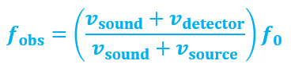

The Doppler Effect
As the siren approaches you (the observer), the waves are compressed and the sound entering your ear is higher than the frequency of the sound originally emitted by the siren. As the vehicle passes you, the source is now moving away from you, so the effect is the opposite: the frequency of the sound detected by your ear is less than the frequency originally emitted by the siren. This phenomenon is called the Doppler effect.

When a source of sound approaches an observer, the observed frequency of the sound increases; when the source moves away from an observer, the observed frequency of the sound decreases
The change in the characteristics of the sound are caused by changes in the frequency of the sound waves as the vehicle passes by.
The speed of the moving source must be a reasonable fraction of the speed of sound. The speed of sound is approximately 332m/s. The speed of the siren on an emergency vehicle is approximately 30m/s. So the vehicle speed is approximately 10% of the speed of sound—a reasonable fraction. In addition, the moving source of sound has to have a component of its velocity vector moving parallel to the detector. So a sound source in a circular orbit around a detector, for instance, would not generate a Doppler effect. Therefore, not all moving sources of sound will generate a Doppler Effect
Calculating the Doppler Effect
If either the detector or the source is moving (or both are moving), the frequency we observe, fobs, and the frequency of the source, f0, are related by the following formula:

When using the equation, if the source is moving toward the detector, the speed of the sound is considered to be negative. If the source is receding from the detector, the speed of the sound is considered to be positive.
PracticeSuppose a fire truck is moving toward a stationary observer at 25.0 m/s. The frequency of the siren on the fire truck is 800.0 Hz. Calculate (a) the frequency detected by the observer as the fire truck approaches and (b) the frequency detected by the observer after the truck passes by. The speed of sound in this case is 342 m/s. |